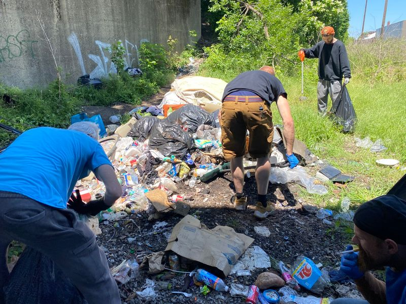

Timeline photos
This is a picture from a cleanup our houseless cleanup crew is working on.
This is from an active houseless camp in Akron. There are about 20 people living in this general area right now.
I'm interested in cleaning up houseless camps for 3 main reasons:
First, these people are living in unimaginable rot, disease, and rodent infestations.
We, as the judgemental society that we are, love to blame these people for the mess they are creating. But imagine for one minute what life would be like if your city stopped collecting trash. You don't have to imagine too hard. You can see it when sanitation workers strike in places like New York and Paris. I'll put some pictures in the comments to refresh your memory.
Now, imagine that you have no car, and your neighbors are constantly stealing your bicycle and cart. How the HELL do you think you'd keep up with the trash? It's simple. You wouldn't and it's proven over and over again in very recent history.
So, we want to help our friends live in a little bit more humane of an environment.
Second, the other side of the coin is that homeless people are making this trash. It feels right for homeless people to pick it up. There is a common psychological truth that the problems of your life might not be your fault but they are your reality. So, for all the trash homeless people have left behind because they had nowhere to throw it, we are righting the wrongs of our past.
Third, cities like to say that they sweep homeless camps because of the trash. Well, if we clean up the trash, then they'll have to come up with a new reason to punish these people for having the audacity to lose everything.
We pay houseless people to clean up trash. We pay $20 for a person to work about an hour and 15 minutes.
We also have a dumpster that costs us $150/month. (I've tried contacting Keep Akron Beautiful for help. They don't return my calls. They probably are just busy.)
The only way we can do this work is through your support. If you are able to donate to our charity, Houseless Movement Charity, we would be deeply grateful. You can do so here:
https://houselessmovement.org/donate/